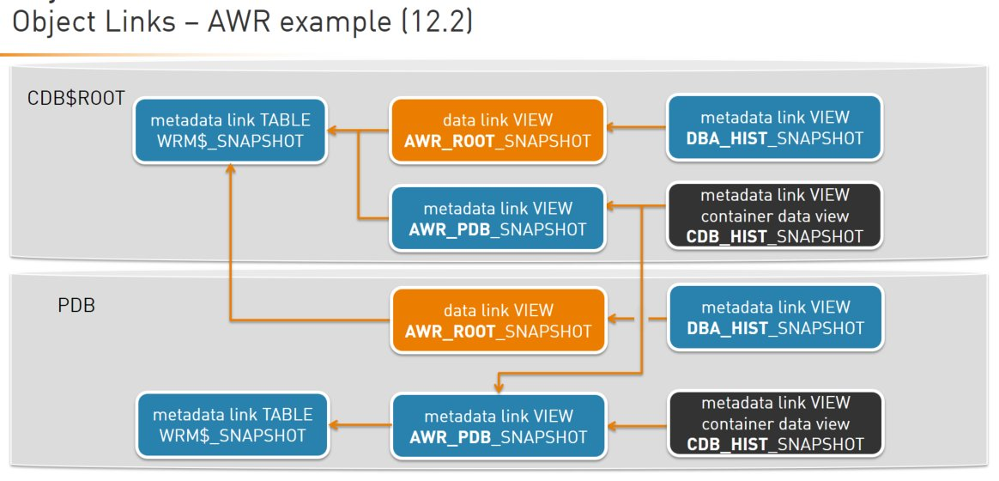

This was first published on https://www.dbi-services.com/blog/oracle-12cr2-awr-views-in-multitenant/ (2016-12-19)
Republishing here for new followers. The content is related to the versions available at the publication date.
.
In a previous post I explained how the AWR views have changed between 12.1.0.1 and 12.1.0.2 and now in 12.2.0.1 they have changed again. This is a good illustration of multitenant object link usage.
What’s new in 12cR2 is the ability to run AWR snapshots at CDB or PDB level. I really think that it makes more sense to read an AWR report at CDB level because it’s about analysing the system (=instance) activity. But with PDBaaS I can understand the need to give a report to analyse PDB sessions, resource and statements.
I’ll start with the conclusion – a map of AWR view to show which ones read from CDB level snapshots, or PDB snapshots, or both:

I’ll explain AWR reports in a future post. Basically when you run awrrpt.sql from CDB$ROOT you get CDB snapshots and when you run it from PDB you have the choice.
In the diagram above, just follow the arrows to know which view reads from PDB or CDB or both. You see two switches between the root and the PDB: data link for one way and common view for the other way. Note that all are metadata links so switches occurs also at parse time.
Let’s start from the table where AWR snapshots are stored:
SQL> select owner,object_name,object_type,sharing from dba_objects where object_name='WRM$_SNAPSHOT';
OWNER OBJECT_NAME OBJECT_TYPE SHARING
----- ------------------------------ ----------------------- ------------------
SYS WRM$_SNAPSHOT TABLE METADATA LINK
This is a table. METADATA LINK means that the structure is the same in all containers, but data is different.
I have the following containers:
SQL> select con_id,dbid,name from v$containers;
CON_ID DBID NAME
---------- ---------- ------------------------------
1 904475458 CDB$ROOT
2 2066620152 PDB$SEED
3 2623271973 PDB1
From CDB$ROOT I see data for the CDB:
SQL> select dbid,count(*) from WRM$_SNAPSHOT group by dbid;
DBID COUNT(*)
---------- ----------
904475458 91
and from PDB I see snapshots taken from PDB:
SQL> alter session set container=PDB1;
Session altered.
SQL> select dbid,count(*) from WRM$_SNAPSHOT group by dbid;
DBID COUNT(*)
---------- ----------
2623271973 79
So remember, CDB$ROOT has 91 snapshots with DBID= 904475458 and PDB1 has 79 snapshots with DBID=2623271973
Views on WRM$_SNAPSHOT are referenced in DBA_DEPENDENCIES:
SQL> select owner,name,type from dba_dependencies where referenced_name='WRM$_SNAPSHOT' and type like 'VIEW';
OWNER NAME TYPE
----- ------------------------------ -------------------
SYS AWR_ROOT_SNAPSHOT VIEW
SYS AWR_ROOT_SYSSTAT VIEW
SYS AWR_ROOT_ACTIVE_SESS_HISTORY VIEW
SYS AWR_ROOT_ASH_SNAPSHOT VIEW
SYS AWR_PDB_SNAPSHOT VIEW
SYS AWR_PDB_ACTIVE_SESS_HISTORY VIEW
SYS AWR_PDB_ASH_SNAPSHOT VIEW
I’m interested in views that show snapshot information: AWR_ROOT_SNAPSHOT and AWR_PDB_SNAPSHOT
SQL> select owner,object_name,object_type,sharing from dba_objects where object_name in ('AWR_ROOT_SNAPSHOT','AWR_PDB_SNAPSHOT') order by 3;
OWNER OBJECT_NAME OBJECT_TYPE SHARING
------ ------------------------------ ----------------------- ------------------
PUBLIC AWR_ROOT_SNAPSHOT SYNONYM METADATA LINK
PUBLIC AWR_PDB_SNAPSHOT SYNONYM METADATA LINK
SYS AWR_ROOT_SNAPSHOT VIEW DATA LINK
SYS AWR_PDB_SNAPSHOT VIEW METADATA LINK
Besides the synonyms, we have a metadata link view AWR_PDB_SNAPSHOT and a data link view AWR_ROOT_SNAPSHOT. The data link one means that it switches to CDB$ROOT when queried from a PDB. Here is the definition:
SQL> select owner,view_name,container_data,text from dba_views where view_name in ('AWR_ROOT_SNAPSHOT','AWR_PDB_SNAPSHOT');
OWNER VIEW_NAME C TEXT
------ ------------------------------ - --------------------------------------------------------------------------------
SYS AWR_ROOT_SNAPSHOT Y select snap_id, dbid, instance_number, startup_time,
begin_interval_time, end_interval_time,
flush_elapsed, snap_level, error_count, snap_flag, snap_timezone,
decode(con_dbid_to_id(dbid), 1, 0, con_dbid_to_id(dbid)) con_id
from WRM$_SNAPSHOT
where status = 0
SYS AWR_PDB_SNAPSHOT N select snap_id, dbid, instance_number, startup_time,
begin_interval_time, end_interval_time,
flush_elapsed, snap_level, error_count, snap_flag, snap_timezone,
decode(con_dbid_to_id(dbid), 1, 0, con_dbid_to_id(dbid)) con_id
from WRM$_SNAPSHOT
where status = 0
Same definition. The difference is that AWR_PDB_SNAPSHOT reads from the current container but AWR_ROOT_SNAPSHOT being a DATA LINK always read from CDB$ROOT.
This is what we can see:
SQL> alter session set container=CDB$ROOT;
Session altered.
SQL> select dbid,count(*) from AWR_ROOT_SNAPSHOT group by dbid;
DBID COUNT(*)
---------- ----------
904475458 91
SQL> select dbid,count(*) from AWR_PDB_SNAPSHOT group by dbid;
DBID COUNT(*)
---------- ----------
904475458 91
SQL> alter session set container=PDB1;
Session altered.
SQL> select dbid,count(*) from AWR_ROOT_SNAPSHOT group by dbid;
DBID COUNT(*)
---------- ----------
904475458 91
This query when run in PDB1 displays the 91 snapshots from the CDB.
SQL> select dbid,count(*) from AWR_PDB_SNAPSHOT group by dbid;
DBID COUNT(*)
---------- ----------
2623271973 79
This one shows what is in the current container.
Those are the views used by the AWR report, depending on the AWR location choice. But what about the DBA_HIST_ views that we know and use from previous versions?
I continue to follow the dependencies:
SQL> select owner,name,type from dba_dependencies where referenced_name in ('AWR_ROOT_SNAPSHOT','AWR_PDB_SNAPSHOT') and name like '%SNAPSHOT' order by 3;
OWNER NAME TYPE
------ ------------------------------ -------------------
PUBLIC AWR_ROOT_SNAPSHOT SYNONYM
PUBLIC AWR_PDB_SNAPSHOT SYNONYM
SYS DBA_HIST_SNAPSHOT VIEW
SYS CDB_HIST_SNAPSHOT VIEW
SQL> select owner,object_name,object_type,sharing from dba_objects where object_name in ('CDB_HIST_SNAPSHOT','DBA_HIST_SNAPSHOT');
OWNER OBJECT_NAME OBJECT_TYPE SHARING
------ ------------------------------ ----------------------- ------------------
SYS DBA_HIST_SNAPSHOT VIEW METADATA LINK
SYS CDB_HIST_SNAPSHOT VIEW METADATA LINK
PUBLIC DBA_HIST_SNAPSHOT SYNONYM METADATA LINK
PUBLIC CDB_HIST_SNAPSHOT SYNONYM METADATA LINK
Here are the views I’m looking for. They are metadata link only. Not data link. This means that they do not switch to CDB$ROOT.
But there’s more in the view definition:
SQL> select owner,view_name,container_data,text from dba_views where view_name in ('CDB_HIST_SNAPSHOT','DBA_HIST_SNAPSHOT');
OWNER VIEW_NAME C TEXT
------ ------------------------------ - --------------------------------------------------------------------------------
SYS DBA_HIST_SNAPSHOT N select "SNAP_ID","DBID","INSTANCE_NUMBER","STARTUP_TIME","BEGIN_INTERVAL_TIME","
END_INTERVAL_TIME","FLUSH_ELAPSED","SNAP_LEVEL","ERROR_COUNT","SNAP_FLAG","SNAP_
TIMEZONE","CON_ID" from AWR_ROOT_SNAPSHOT
SYS CDB_HIST_SNAPSHOT Y SELECT k."SNAP_ID",k."DBID",k."INSTANCE_NUMBER",k."STARTUP_TIME",k."BEGIN_INTERV
AL_TIME",k."END_INTERVAL_TIME",k."FLUSH_ELAPSED",k."SNAP_LEVEL",k."ERROR_COUNT",
k."SNAP_FLAG",k."SNAP_TIMEZONE",k."CON_ID", k.CON$NAME, k.CDB$NAME FROM CONTAINE
RS("SYS"."AWR_PDB_SNAPSHOT") k
The DBA_HIST_SNAPSHOT is a simple one view on AWR_ROOT_SNAPSHOT which, as we have seen above, always show snapshots from CDB:
SQL> alter session set container=CDB$ROOT;
Session altered.
SQL> select dbid,count(*) from DBA_HIST_SNAPSHOT group by dbid;
DBID COUNT(*)
---------- ----------
904475458 91
 
SQL> alter session set container=PDB1;
Session altered.
SQL> select dbid,count(*) from DBA_HIST_SNAPSHOT group by dbid;
DBID COUNT(*)
---------- ----------
904475458 91
Then CDB_HIST_SNAPSHOT reads AWR_PDB_SNAPSHOT which show current container snapshots. But this view is a COMMON DATA one, with the CONTAINER() function. This means that from CDB$ROOT when executed with a common user data from all open containers will be retrieved:
SQL> alter session set container=CDB$ROOT;
Session altered.
SQL> select dbid,count(*) from CDB_HIST_SNAPSHOT group by dbid;
DBID COUNT(*)
---------- ----------
2623271973 79
904475458 91
However, from a PDB you cannot see anything else:
SQL> alter session set container=PDB1;
Session altered.
SQL> select dbid,count(*) from CDB_HIST_SNAPSHOT group by dbid;
DBID COUNT(*)
---------- ----------
2623271973 79
Multitenant adds a new dimension in the dictionary views and we must be aware of that. However, compatibility is still there. The scripts that we used to run to query DBA_HIST views should still work. Don’t forget to always join on DBID and INSTANCE_NUMBER in addition to SNAP_ID so that your scripts are still working in RAC, and cross containers.
In 12.2 you can do the same for your application: used metadata links, data links, and common views for your tables. But remember to keep it simple…
{kind=link}